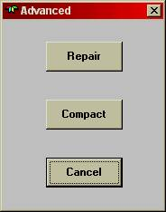

Inside the AGS IV startup window, and next to the and buttons (see Figure 13.1), there is also an button option that provides several database maintenance functions.
This chapter describes the system functions made available through this button.
Once the button is selected, the Advanced menu option window is made available to the developer (see Figure 13.2). Following are the explanations of the Advanced menu options.

The option attempts to repair the Access database, where the application is stored. This should be attempted only if a problem in the structure of the database has been detected. As a failure during repair may leave the application database in an unrecoverable state, it is important to backup the application before initiating this function.
Using and maintaining an application over time can contribute to creation of wasted disk space in the database file. This is mostly due to the deletion of items from the database whose storage space cannot be reclaimed.
The option of the Advanced maintenance menu initiates an automatic compression of the database, reducing the disk and memory usage, as well as increasing the execution efficiency of the program.
As a failure during compression may leave the application database in an unrecoverable state, it is important to backup the application before initiating this function.